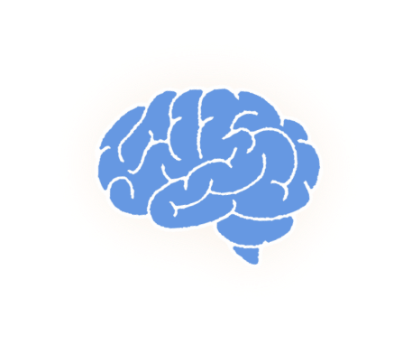
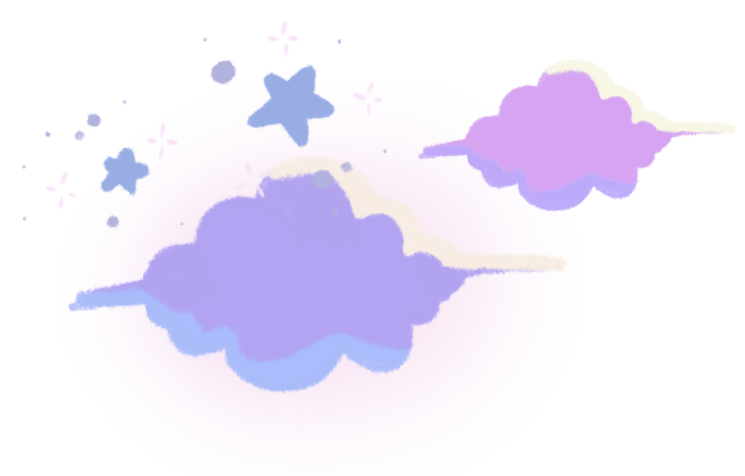
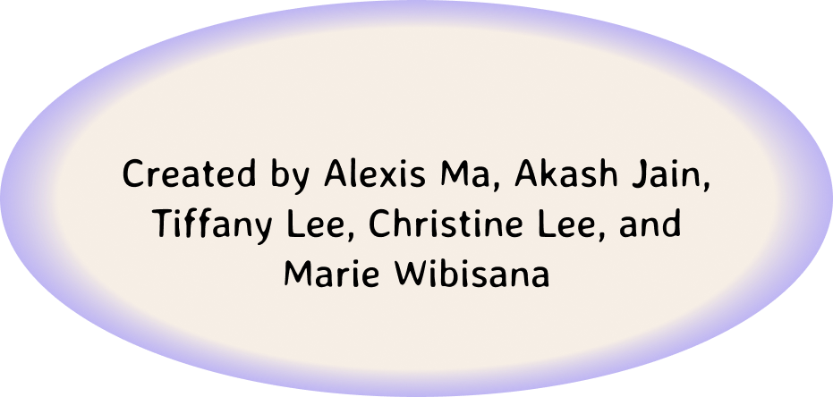

About
Neuro Narratives
Neuro Narratives combines advanced brain scans, quizzes, and decision-making scenarios to create an immersive process that help users confront mental and emotional challenges, reframe experiences, and grow with personalized feedback. This concept merges AI and neuroscience to foster self-awareness and resilience through a transformative, interactive process.
1. It begins with a brain scan to analyze neural patterns tied to emotional triggers or mental blocks.

2. Users then take a personalized quiz, blending biological data with personal input.

3. The core experience is immersive simulations where users face past challenges or hypothetical scenarios, with decisions shaping the journey in real time.

4. Finally, personalized feedback highlights growth areas and actionable strategies for improvement.
